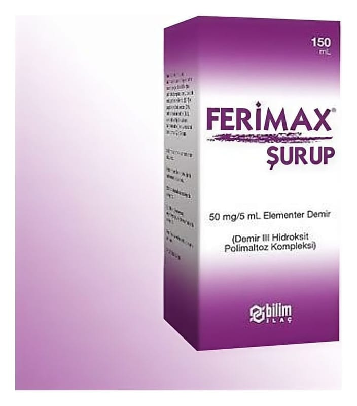

Ferimax 50 mg/5 ml Şurup, 150 ml

Ne için kullanılır
KT · Bölüm 1FERİMAX, 150 mL’lik renkli şişede sunulan bir şuruptur.
FERİMAX, etkin madde olarak demir III hidroksit polimaltoz kompleksi içerir.
Değişik kökenli tüm demir eksiklikleri ile demir eksikliği anemisinin (kansızlık) tedavisi ve bu tür anemilerden korunmada, hamilelik, emzirme ve çocukluk döneminde demir eksikliği tedavisinde kullanılır.